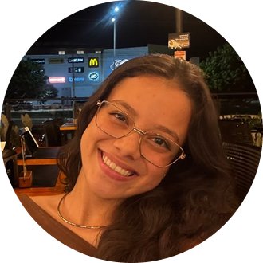

Seja bem-vindo ao meu portfólio pessoal!
Aqui você vai encontrar algumas informações sobre mim, meus gostos, meus interesses, minha trajetória acadêmica, meus hobbies e meus objetivos para o futuro.

Meu nome é Bruna Guedes Machado, tenho 19 anos e atualmente moro em Palmas, Tocantins. Sou estudante de Engenharia de Software na UniCatólica e estou no 4º período.
Estou gostando muito do curso e, a cada semestre, tenho aprendido mais sobre tecnologia e descoberto novas áreas que despertam meu interesse.
Diferente de muitas pessoas que escolhem a área de tecnologia porque sempre tiveram afinidade com computadores, eu comecei a olhar para essa área por outros motivos. O mercado de tecnologia me chamou atenção pelas oportunidades de crescimento e pela possibilidade de ter uma boa remuneração. É uma área que vem crescendo bastante e oferece muitas possibilidades profissionais. Então pensei: Por que não tentar?
Tenho interesse em construir minha carreira na área de Cibersegurança e Forense Digital. Quero aproveitar minha formação em Engenharia de Software para desenvolver conhecimentos técnicos e me preparar cada vez mais para atuar nessa área.
Além de estudar e trabalhar, também gosto de aproveitar meu tempo livre para fazer coisas que eu gosto. Alguns dos meus hobbies incluem:
Todo mundo tem aquelas comidas que não consegue recusar. Estas são algumas das minhas favoritas:
Viajar é uma das coisas que mais tenho vontade de fazer. Existem vários lugares que gostaria de conhecer, tanto no Brasil quanto fora dele. Cada destino me chama atenção por motivos diferentes, seja pelas paisagens, pela cultura ou pelas experiências que pode proporcionar.


Você pode me encontrar nas seguintes redes sociais:
Este é o meu quadro de horários do 4º período de Engenharia de Software:
| Disciplina | CH | Dias | Turma | Tipo |
|---|---|---|---|---|
| Programação Orientada a Objetos | 80h | Segunda-feira | 204N4A | Presencial |
| Sistema de Banco de Dados II | 80h | Terça-feira | 204N4A | Presencial |
| Soluções para Internet | 80h | Quarta-feira | 204N4A | Presencial |
| Empreendedorismo e Sustentabilidade | 80h | Quinta-feira | 204N4A | Presencial |
| Redes de Computadores | 80h | Sexta-feira | 204N4A | Presencial |